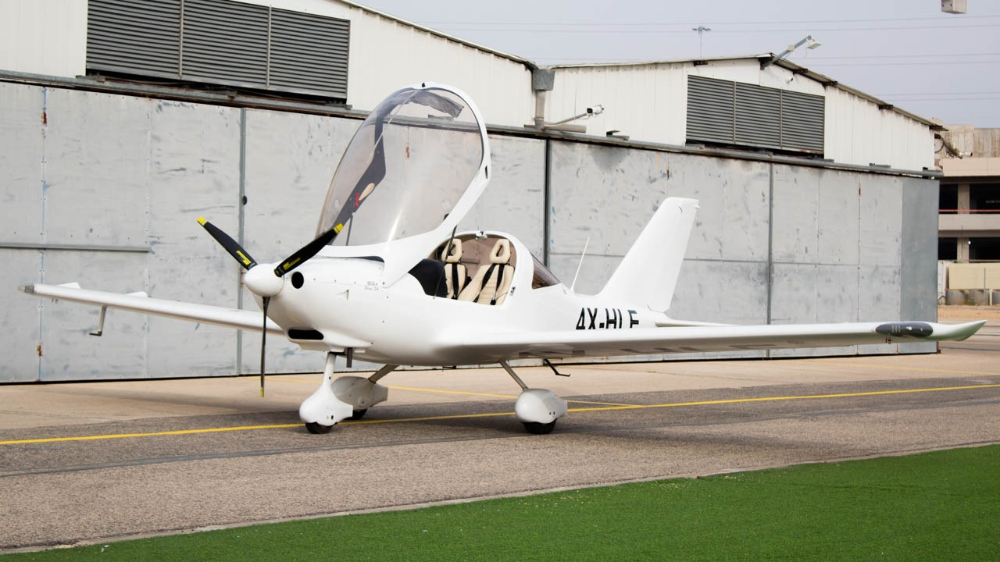
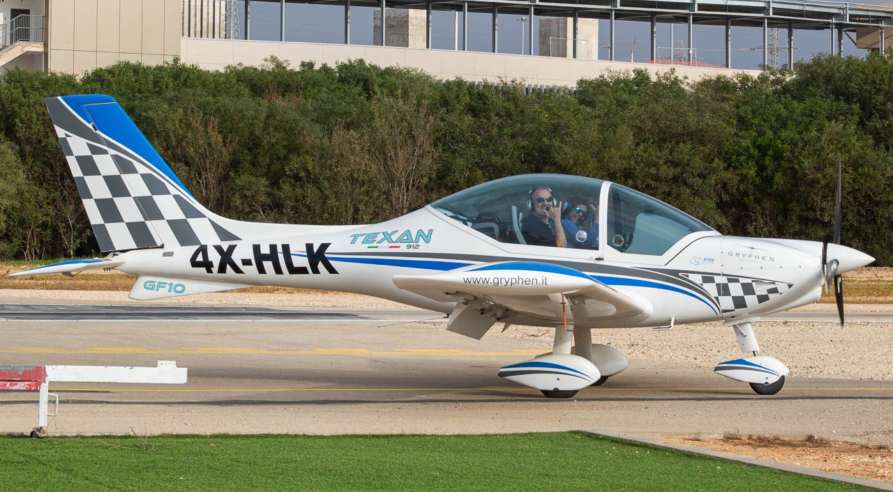
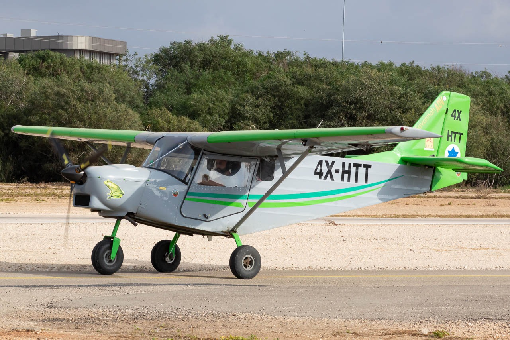

שדה התעופה ראשון לציון
שדה תעופה קטן — מטוסי לימוד, ספורט וטיסות פנאי
LLRS • ראשון לציון📍 דשא חניית אורחים
המקום הטוב ביותר לצלם בשדה ראשון לציון — מנחת אולטרה לייט מדהים! הדשא בחניית האורחים תופס את כל נמל התעופה בזווית מושלמת. מבט פנורמי על כל הפעילות, קרוב למסלול ונוח לישיבה.

📷 קרדיט: אורי נוח

📷 קרדיט: אורי נוח

📷 קרדיט: אורי נוח
💡
טיפים לראשון לציון
- הדשא בחניית האורחים תופס את כל נמל התעופה — מגיעים ויושבים בנוח
- ימי חול בבוקר — הכי הרבה פעילות לימוד
- מטוסים עיקריים: מטוסי לימוד קטנים, מדחפים ומטוסי ספורט
- עדשה קצרה מספיקה — השדה קטן והמטוסים קרובים
בסיס תל נוף
בסיס חיל האוויר המרכזי — מסוקים, מטוסי קרב ועוד
LLTK • רחובות📍 פארק ההדרים — רחובות
פארק ירוק ונוח ממש ליד הבסיס — מקום מצוין לצילום מטוסים וסוקים שממריאים ונוחתים בתל נוף.
💡
טיפים לתל נוף
- פארק ההדרים נוח לישיבה ארוכה — כסאות, צל ומרחב
- מטוסים עיקריים: AH-64 אפאצ'י, F-15, מסוקי קרב
- מומלץ להגיע בשעות הבוקר לפעילות מקסימלית
נמל התעופה בן גוריון
הנמל הבינלאומי הראשי — מאות טיסות ביום
LLBG • TLV • לוד📍 איפה שהייתה גבעת הספוטרים (כבר לא קיימת — עומדים על הכביש)
המקום הקלאסי של ספוטרי נתב"ג. גבעת הספוטרים כבר לא קיימת — כיום עומדים על הכביש באותו אזור עם מבט ישיר על המסלולות.
🎬 סרטון ממתי שהיה את הגבעה
📸 קרדיט: הלני חזז
📍 גשר ECO — צד E
מקום מצוין לנחיתות על מסלול 30 ולצילום מטוסים בשערים של ECO.
📍 גשר BRAVO
מבט מעולה על המסלולות מהגשר המערבי של הנמל. 🚗 באים באוטו — עלו לקומת הממריאים. 🚌 באים בתחבורה ציבורית — עלו לקומה 3.
📸 תמונה מהמקום

📷 קרדיט: הלני חזז
📍 צומת הטייסים
פארק ירוק עם מבט על הנמל. מקום נוח לישיבה ארוכה עם כיסאות ואוכל. פחות אידיאלי לטלפוטו אבל נוח לאורחים.
📍 גג החניון — טרמינל 1
גג חניון טרמינל 1 עם מבט מצוין על המסלולות. צריך לעלות על רצפה קטנה — מומלץ לבוא כמה אנשים ביחד.
💡
טיפים לנתב"ג
- השתמשו ב-Flightradar24 לראות מה מגיע ומתי
- בקיץ — בוקר מוקדם לתאורה הכי טובה
- מסלול פעיל: בדקו rwy בשימוש לפני שמגיעים
- חברות מיוחדות: EL AL, Arkia, Israir + כל העולם
- שעות שיא: 06:00-09:00 ו-20:00-23:00
נמל התעופה הרצליה
נמל תעופה כללי — מטוסי לימוד וטיסות חינוך
LLHZ • הרצליה📍 נקודת הצפייה הרשמית — מכולה
נקודת הצפייה הרשמית בנמל הרצליה — ברגע שעולים על המכולה, כל המטוסים עוברים ממש מעליך! חוויה מדהימה לצלמים. מתאים לכל הרמות.
📍 גדר המערבית
מהצד המערבי של הנמל יש גישה קלה לגדר. מתאים לצילום מטוסי לימוד בחניה.
📍 הגלגלים הגדולים
עולים על הגלגלים הגדולים ומשם מקבלים זווית צילום ייחודית על המטוסים — קרוב ומרשים!
💡
טיפים להרצליה
- עלה על המכולה בנקודת הצפייה — המטוסים עוברים ממש מעליך!
- ימי חול בבוקר — הכי הרבה פעילות לימודי טיסה
- מטוסים עיקריים: Cessna, Piper, Beechcraft
- הנמל קטן — עדשה של 200mm מספיקה ברוב המקרים
🎬 סרטון מהמכולה
📸 קרדיט: עומר נורי
🎬 סרטון מהגלגלים הגדולים
📸 קרדיט: אורי גאוזמן
🎬 סרטון מהגדר המערבית
📸 קרדיט: הלני חזז